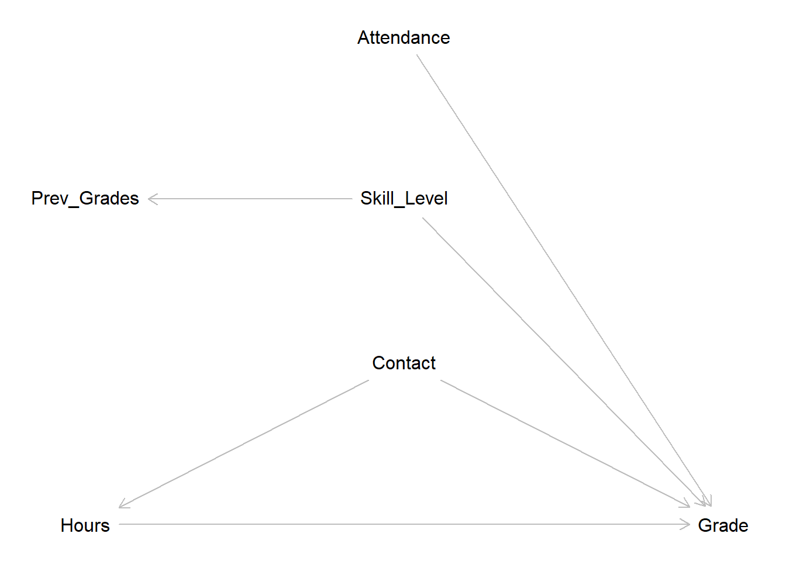

7 Linear Regression - Theory II: Multiple Linear Regression
Maybe explaining the grade a student receives solely based on the hours of
invested time does not paint the whole picture. As we have alluded to, there
may be other variables that could affect the relationship between hours and
grade.
If we fail to include these in our model, we may not get an unbiased estimate
for our effect of interest. Maybe the actual effect for hours is even stronger,
maybe it is weaker, or maybe there is no effect at all.
To assess this, we have to move from simple to multiple linear regression.
7.1 Objectives
- Expand the idea to multiple linear regression
- Interpreting different types of independent variables
- Understand measures of uncertainty
7.2 Multiple Linear Regression
A simple linear regression only allows for one independent variable. This is why we need multiple linear regression if we want to start introducing additional variables into the model. Luckily this is easy to understand as we already know the formula for a simple linear regression:
\[y = \beta_0 + \beta_1*x_1 + \epsilon\]
To change a simple into a multiple linear regression, we just start adding the additional variables and their coefficients additively to the formula.
\[y = \beta_0 + \beta_1*x_1 + \beta_2*x_2 + ... + \beta_k*x_k + \epsilon\]
So to add a second variable and its coefficient we add the term \(+ \beta_2*x_2\) and so on until we added all independent variables of interest \(k\) to the model. Everything else works exactly as for the simple model.
7.2.1 Adding additional metric variables
We already expected that the mean of the previous grades could be a strong predictor for future grades. We could understand these as a proxy variable for the general skill level of a student. The higher the skill level, the higher previous grades will have been.
How we can add additional variables in R code will again be a topic for the next
session, but let us look at the results of a regression of grade on
hours_centered and previous_grades_centered, the latter being centered on the
mean previous grade of \(2.935\).
##
## Call:
## lm(formula = grade ~ hours_centered + previous_grades_centered,
## data = grades)
##
## Residuals:
## Min 1Q Median 3Q Max
## -1.44462 -0.30556 0.00622 0.32878 1.31002
##
## Coefficients:
## Estimate Std. Error t value Pr(>|t|)
## (Intercept) 2.967500 0.038316 77.449 <2e-16 ***
## hours_centered -0.056543 0.006114 -9.248 <2e-16 ***
## previous_grades_centered 0.904079 0.039830 22.699 <2e-16 ***
## ---
## Signif. codes: 0 '***' 0.001 '**' 0.01 '*' 0.05 '.' 0.1 ' ' 1
##
## Residual standard error: 0.5419 on 197 degrees of freedom
## Multiple R-squared: 0.7492, Adjusted R-squared: 0.7467
## F-statistic: 294.3 on 2 and 197 DF, p-value: < 2.2e-16As we added a new variable, we now see three coefficients. The intercept has not changed. It now indicates the estimated grade for a student who invests the mean amount of hours, \(40.33\), and whose previous grades are exactly \(2.935\), the mean of the variable.
The coefficient for hours_centered got mildly more negative, still telling us
that the value of grade gets lower, the more hours are invested in writing the
paper. This coefficient now gives us the effect while controlling for the
effect of previous_grades_centered. This is what multiple linear regression
does, giving us the coefficients for our variables of interest while keeping all
other independent variables at specific values. As we have centered the variable
for previous grades, the coefficient for hours centered gives us the effect
when the previous grades were exactly at the mean of \(2.935\).
In the same way, the coefficient for previous_grades_centered gives us the
effect of previous grades when the invested hours are controlled for, in this
case when the invested hours were exactly \(40.33\). The coefficient is rather
high and positive. This indicates that a student with a previous grade value
that is \(1\) above the mean, is estimated to receive a new grade that is \(0.9\)
points above the intercept. This means, that the previous grade is a very strong
predictor for the new grade.
While plotting in more than two dimensions gets really hard, we can still calculate \(\hat{y}\) for certain values of both independent variables. We already know the predicted grade for a student with mean values on both independent variables, as this is the intercept. To make sure that we correct, we can calculate it again.
\[b_0 + b_{hours\_centered}*0 + b_{previous\_grades\_centered}*0 = 2.9675\]
For this case we can see that the previous grade actually is a strong predictor, as the previous and new grades are substantially the same.
What if a student whose previous grades were \(1\) above the mean, so just below \(4.0\), but who decides to invest \(10\) hours more than the mean in writing the new paper?
\[2.9675 - 0.056543 * 10 + 0.904079 * 1 = 3.306149\]
So the good message is, while previous grades are a strong predictor, putting in more hours still leads to better grades.
What if a really good student decides to rely on their skill and to work less this time?
\[2.9675 - 0.056543 * -10 + 0.904079 * -2 = 1.724772\]
While \(1.7\) is still a very good grade, working 10 less hours than the mean of students leads to a substantially worse estimate compared to the about \(1.0\) received in previous grades.
7.2.2 Adding dummy variables
Another variable that could be of interest in explaining the received grade,
is if a student attended most of the seminar sessions.
attendance holds this information in the form of a dummy variable. Dummies can
only have two states. “Yes” or “No”, “1” or “0” or in this case “TRUE” or
“FALSE”.
Let us add the variable to our model.
##
## Call:
## lm(formula = grade ~ hours_centered + previous_grades_centered +
## attendance, data = grades)
##
## Residuals:
## Min 1Q Median 3Q Max
## -1.41059 -0.30910 0.01667 0.35607 1.29849
##
## Coefficients:
## Estimate Std. Error t value Pr(>|t|)
## (Intercept) 3.157411 0.078658 40.141 < 2e-16 ***
## hours_centered -0.053942 0.006088 -8.860 4.85e-16 ***
## previous_grades_centered 0.911802 0.039282 23.212 < 2e-16 ***
## attendanceTRUE -0.248250 0.090246 -2.751 0.0065 **
## ---
## Signif. codes: 0 '***' 0.001 '**' 0.01 '*' 0.05 '.' 0.1 ' ' 1
##
## Residual standard error: 0.5331 on 196 degrees of freedom
## Multiple R-squared: 0.7586, Adjusted R-squared: 0.7549
## F-statistic: 205.3 on 3 and 196 DF, p-value: < 2.2e-16This gives us a new line in the R Output holding an estimate for
attendanceTRUE. What is meant by this? In contrast to the metric variables we
have uses in our model up to this point, a dummy variable - or binary variable -
can only have two states. As we are using a logical variable here, it can only
have the value TRUE - here indicating regular attendance - or FALSE. So what
the output shows us, is the effect of attendance being TRUE compared to being
FALSE. If a student did regularly attend the seminar, the estimated grade is
\(-0.248250\) lower compared to when they did not.
We can observe what happens in the formula:
\[\hat{y} = b_0 + b_{hours\_centered}*x_{hours\_centered} + \\ b_{previous\_grades\_centered} * x_{previous\_grades\_centered} +\\ b_{attendance} * x_{attendance}\]
If you calculate with TRUE and FALSE in R, the values \(1\) and \(0\) are used
respectively. So \(x_{attendance}\) can either have the value \(1\) for regular
attendance or \(0\) for not so regular attendance.
If a student did regularly attend, the coefficient $b_{attendance} becomes a part of the estimate \(\hat{y}\):
\[\hat{y} = b_0 + b_{hours\_centered}*x_{hours\_centered} +\\ b_{previous\_grades\_centered}*x_{previous\_grades\_centered} +\\ b_{attendance} * 1\]
If student did not regularly attended, this happens:
\[\hat{y} = b_0 + b_{hours\_centered}*x_{hours\_centered} \\ + b_{previous\_grades\_centered}*x_{previous\_grades\_centered} +\\ b_{attendance} * 0\]
Which shortens to:
\[\hat{y} = b_0 + b_{hours\_centered}*x_{hours\_centered} +\\ b_{previous\_grades\_centered}*x_{previous\_grades\_centered}\]
The coefficient is no longer a part of the estimate. One can basically say, the coefficient gets switched on or off by the value of the dummy variable.
So while the estimate for a student with mean values for invested hours and previous grades who did not attend is equal to the intercept of \(3.157411\), for a similar student who attended we can calculate the estimate as:
\[3.157411 - 0.053942*0 + 0.911802*0 - 0.248250 * 1 = 3.157411 - 0.248250 \\ = 2.909161\]
It seems attending class is an easy way to raise one’s grades.
7.2.3 Adding categorical variables
We have one further variable in our simulated data set that could be of interest
in explaining, what makes a good grade in a seminar paper. contact is a
categorical variable, or a factor variable in R terms.
It can take three different categories. No contact indicates that
the student did not contact the lecturer to discuss a research question or the
laid out plan for the paper. E-Mail means that there was some written contact
and at least the basics for the paper were discussed before writing. Lastly,
In Person stands for an in depth discussion with the lecturer, clearing up
problems beforehand and thus potentially having a more stringent vision for the
paper before writing the first word.
Let us add the variable to our model.
##
## Call:
## lm(formula = grade ~ hours_centered + previous_grades_centered +
## attendance + contact, data = grades)
##
## Residuals:
## Min 1Q Median 3Q Max
## -1.3835 -0.2525 0.0167 0.2678 0.9347
##
## Coefficients:
## Estimate Std. Error t value Pr(>|t|)
## (Intercept) 3.617949 0.068077 53.145 < 2e-16 ***
## hours_centered -0.050830 0.004433 -11.466 < 2e-16 ***
## previous_grades_centered 0.874123 0.028657 30.503 < 2e-16 ***
## attendanceTRUE -0.324653 0.065781 -4.935 1.72e-06 ***
## contactE-Mail -0.413808 0.069817 -5.927 1.39e-08 ***
## contactIn Person -0.853252 0.063964 -13.340 < 2e-16 ***
## ---
## Signif. codes: 0 '***' 0.001 '**' 0.01 '*' 0.05 '.' 0.1 ' ' 1
##
## Residual standard error: 0.3869 on 194 degrees of freedom
## Multiple R-squared: 0.8741, Adjusted R-squared: 0.8709
## F-statistic: 269.4 on 5 and 194 DF, p-value: < 2.2e-16Wait, we entered three categories into the model and got estimates for two of
them. What happened? What R does is to create two dummy variables on the fly.
The first discerns between having E-Mail contact and no contact at all. The
second one between having contact in person and no contact at all. So for
categorical variables in regression models we always compare being in one of the
categories to being in the base category. In this case the base category is
No contact, but we could also change the base category. It depends on what we
are interested in comparing to. For our example comparing the effects of having
more in depth contact to having none makes sense.
Let us look at our formula again:
\[\hat{y} = b_0 + b_{hours\_centered}*x_{hours\_centered} +\\ b_{previous\_grades\_centered} * x_{previous\_grades\_centeerd} +\\ b_{attendance} * x_{attendance} +\\ b_{E-Mail} * x_{E-Mail} + b_{In Person} * x_{In Person}\]
Now there are three possibilities. A student can have no contact at all. In this case both dummy variables are equal to \(0\). To make our formula easier to read, we have abbreviated the middle part for now:
\[\hat{y} = b_0 + ... + b_{E-Mail} * 0 + b_{In Person} * 0\]
So in this case controlling all other independent variables at their default
values, the mean for the metric variables and FALSE for attendance, the
intercept gives us the estimate for the grade when the student had no contact to
the lecturer, as both dummy variables that were created for contact are “switched off”.
The two other possibilities are that a student either had E-Mail contact or an in person discussion:
\[\hat{y} = b_0 + ... + b_{E-Mail} * 1 + b_{In Person} * 0\]
\[\hat{y} = b_0 + ... + b_{E-Mail} * 0 + b_{In Person} * 1\]
In both cases the relevant dummy variable is “switched on” while the other does not factor into the equation.
Looking at the estimates we can see that having contact to the lecturer before
writing has strong negative effects, resulting in better grades. Having E-Mail
contact reduces the value of grade by \(-0.413808\) points, having an in person
discussion by \(-0.853252\).
So what grade can a student whose previous grades were at the mean of \(2.935\), but who decided to put in 20 hours more compared to their peers, regularly attend the seminar and have an in-depth personal discussion before writing their paper expect on average as their new grade?
\[3.617949 - 0.050830 * 20 + 0.874123 * 0 - 0.324653 * 1 - 0.413808 * 0 - 0.853252 * 1 \\ = 1.423444\]
Putting in the hours, attending and working with your lecturer seems to pay off, at least in our simulated data set.
7.3 Returning to our research question
Our exemplary research question concerned itself with what makes a good grade in a seminar paper. In particular we were interested in the effect of the invested hours, as our main hypothesis was that more hours lead to better grades. What do we know now?
Our analysis points towards a clear effect from hours on grade. This effect
was consistently visible in all of our models. But did we correctly identify
and estimate the effect of interest? Maybe. The problem is, we actually did not
approach the analysis correctly. In a real analysis we should absolutely
refrain from adding variables to our model that could be relevant until we are
satisfied or even until all available variables are bunched into one huge model.
It was fine to do this in this introduction to linear regression to learn how
different types of variables can be used in a regression model. But in a real
project, we have to invest time to think about which variables to add because we
assume that they have a relevant effect based on theoretical assumptions about
the processes we are interested in.
So let us do this now and vow do make this our first step in all future endeavors. While we do not have a clear theoretical basis, we can make clear assumptions on the data generating process and draw these in a DAG.

Our central assumption, and the effect we want to identify and estimate, is the
direct effect from hours on grade in the bottom line. The more hours a
student invests, the better the grade should be.
The assumed effect of contact is more complex. For one we assume that a more
in-depth contact with the lecturer will increase the grade directly. The
research question will be more focused, the student will know what is important
to a certain lecturer, common mistakes can be avoided if they are cleared up
beforehand and so on. But we will also assume that contact will have an effect
on hours in the sense that the hours invested can be used more efficiently if
an in-depth discussion has taken place. Instead of wasting time running into
problems that could have been avoided most of the invested time can actually go
into constructive work. This makes contact a confounder for grade and
hours.
A student’s skill level will also have a direct effect on grade. As we do not
have a direct measure of skill in our data, we use previous_grades as a proxy
for skill level. attendance is also assumed to have a direct effect on grade
as students who were present in the seminar will not only have learned the seminar’s
contents, but will also have a better understanding of what is expected in their
seminar papers.
Tapping into the knowledge from session 4, we can now make implications for our
model from the DAG. Let us list all paths from hours to grade:
\[A: Hours \rightarrow Grade\]
\[B: Hours \leftarrow Contact \rightarrow Grade\]
Path A represents our effect of interest. On path B, contact is a confounder
for hours and grade. To close this path, we have to control for contact.
As neither skill level - or previous_grades - nor attendance lie on a path
from our independent variable of interest to our dependent variable, we should
not control for them in our model.
That leaves us with hours and contact to be included in our linear
regression, if our goal is to get an unbiased estimate for the effect of
invested time on the final grade. So let us do this:
##
## Call:
## lm(formula = grade ~ hours_centered + contact, data = grades)
##
## Residuals:
## Min 1Q Median 3Q Max
## -1.85595 -0.74624 -0.02106 0.66648 2.50161
##
## Coefficients:
## Estimate Std. Error t value Pr(>|t|)
## (Intercept) 3.44352 0.10404 33.098 < 2e-16 ***
## hours_centered -0.04967 0.01052 -4.723 4.43e-06 ***
## contactE-Mail -0.46482 0.16785 -2.769 0.00616 **
## contactIn Person -1.02804 0.15240 -6.746 1.67e-10 ***
## ---
## Signif. codes: 0 '***' 0.001 '**' 0.01 '*' 0.05 '.' 0.1 ' ' 1
##
## Residual standard error: 0.9305 on 196 degrees of freedom
## Multiple R-squared: 0.2643, Adjusted R-squared: 0.253
## F-statistic: 23.47 on 3 and 196 DF, p-value: 5.072e-13This is our estimate. Each hour invested beyond the mean of \(40.33\) hours changes the grade by about \(-0.05\) points. This supports our hypotheses and we can conclude, that investing more hours into writing a seminar paper actually is a worthwhile investment.
But remember: This is correct as long as our DAG is drawn correctly, which is
always debatable. Maybe we should assume an effect from skill level on hours.
The higher the skill level the more efficiently the available time can be used.
For this example we know the DAG is correct, because we have simulated the data
exactly in this way. For real world applications we never know if our DAG is
correct. All we can and have to do is base it on thorough thinking,
theoretical work, exploratory data analysis and sound arguments.
This all is true if our goal is to estimate an effect of interest as precisely
as possible. But as we have alluded to in the introduction to this session we
could also use modelling with a different goal, i.e. predicting a grade as
accurately as possible. For this task, the model which only includes hours and
contact will not do the best job. From our DAG we know that attendance and
previous_grade should have an effect on grade, as we have also seen in our
models. For this task the full model including all these variables will produce
better estimates. We will return to this in a later session, but for now we
should remember that we have to know our task because the task dictates which is
the best model to use.
7.4 Adressing the uncertainty
Looking at the coefficient block from the output, we see more
than just our estimates. The Std. Error - standard error - is a measure for the
uncertainty of our estimates. It basically tells us, how far away the actual
values of the observations used to compute the model are from our estimate
on average. The smaller the standard error, the more accurate our
estimate. The standard error is presented in the units of the estimate and we
can thus compare them. A large standard error for a large estimate is far less
problematic compared to a large standard error for a small estimate.
The estimate and it’s standard error are the basis for hypothesis testing.
What we are testing is the alternative hypotheses \(H_a\) that there actually
is an effect of our independent variable on the dependent variable against the
null hypothesis \(H_0\) that there is no effect. To reject the null hypothesis
and be confident that we are observing an actual effect, versus an effect that
is just based on random variation in our sample, the estimate has to be far
away enough from \(0\) and be accurate enough, i.e. have a small standard error.
This relationship is computed in the t-statistic, t value in
our output. From this the p-value can be computed, Pr(>|t|) in the output.
The p-value tells us the probability to observe an association
between the independent and the dependent variable as large or larger than our
estimate suggests, if the true association would actually be \(0\). If the p-value
is small enough, we can reject \(H_0\) and conclude that we observed an actual
effect. There are certain agreed upon cutoffs in statistics, while values that
meet this cutoffs are considered statistically significant. The most common
cutoff in social sciences is \(0.05\) indicated by one * in the output.
Other common cutoffs are indicated by more asterisks. It is important to note,
that we can not say that more * behind an effect mean that this effect has a
higher statistical significance. We have to decide on a level of statistical
significance that we want to test for before we see the results. If we decide on
testing for a significance level of \(5\%\), seeing more than one star then only
means that the effect is also statistically significant at the \(5\%\) level.
Interpreting p-values correctly and not falling into the common pitfalls like the one mentioned above is a topic on its own. We do not have the time to dive into this here, so for now we can agree that p-values below \(0.05\) indicate that we can reject \(H_0\) and thus conclude that we have actually observed an effect. Still, our interpretation of regression results should not focus solely on p-values or lead us to disregard any effects that did not meet the cutoff. For example, we can have very small p-values for effects that are so small that they are substantially irrelevant. One way to address this is to inspect the actual magnitudes of the effects. On the other hand, we can have p-values larger than \(0.05\) for effects that are still relevant. Maybe the problem is not that there is no effect but that we were not able to measure the variable in question precisely enough or that we just did not have enough observations. We can not go any deeper than this here, but we should remember that the practice of declaring every effect with stars a win, or even with more stars a bigger win, and disregarding everything without them may still be common but is not the way to go forward.
In our model, we can see that the effect of interest is statistically
significant. We can thus conclude, that we have observed an actual effect
from hours on grade. Our estimate is large enough and our standard error
small enough to reach this conclusion.
7.5 Moving on
We have attained an estimate for our effect of interest which supports our hypotheses that investing more hours into writing a paper leads to better grades. So can we wrap a bow on the question and move on to finally figuring out what is going on in our NBA data? Almost, but not yet. We still do not know, if our model actually works as intended. Linear regression, as well as every other modelling technique, has some underlying statistical assumptions that we have to meet for the model to accurately estimate an effect. In the next session we will get to know these assumptions and how we can test for them.